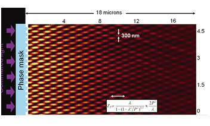
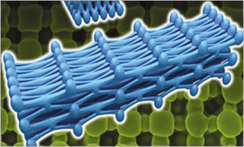
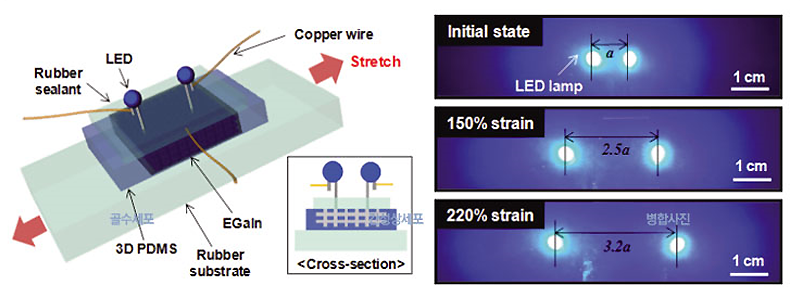

Report by Subjects
Report by Subjects
KAIST RESEARCH ACHIEVEMENTS
World's Best Super-stretchable Conductors with 3D Nanoarchitectures
Department of Materials Science and Engineering Seokwoo Jeon
Summary
In the year 2030, technologies that integrate all forms of computational and communication technologies into 'wearable' platforms will reach maturity. In addition to wearable accessories and clothes ranging from suits, eye glasses, and watches, which support advanced computational capabilities weaved into fabric or solid platforms, skin patches or tattoos that function as computers and mobile devices will revolutionize lifestyles and open doors to new levels of productivity.
R&D Report
Of the vast amount of research done on stretchable electronics from foreign research institutions, none can claim an approach that is practical enough for commercialization. The technology brought forth by the Jeon research team, on the other hand, shows great significance in that it demonstrates a novel mechanism, which meets all the requirements for moving forward into practical applications.
Ever thought of electronics that can stretch like a rubber-band? Rarely is it possible to find electronic materials that can stretch, but if found, they could make sci-fi fantasies into reality. Skin tattoos that can replace your mobile devices, display screens that can be folded into your pocket, suits that can serve your computational needs all become possible through finding the right stretchable electronic material. But rather than creating such a material from scratch, it would be easier and more economical to convert an existing stretchable material into one that can stretch even more and also conduct electricity. The Jeon research team set out to do just this!
3D Nanopatterning with conformal phase masks
By shining light onto a transparent elastomer decorated with periodic nanopillars, the transmitted light forms a uniform 3D distribution of hotspots. These hotspots are what generate the 3D nanostructures, and are the key to enabling materials to stretch to higher degrees. Originally developed by Seokwoo Jeon, this proprietary technology termed 'Proximity-field nanopatterning' or 'PnP' boasts fast and scalable production of 3D nanostructures with high uniformity and regularity unseen in competing 3D nanopatterning technologies.
 Figure 1. The principle of Proximity-field nanoPatterning
Increasing stretchability with 3D ordered nanoporous structures
 Figure 2. Super-stretchy, 3D nanostructured elastomer Realizing super-stretchable conductors with record-breaking stretchability
After creating a nanoporous matrix through PnP, the Jeon research team pour liquid elastomer into the matrix. They then cure the elastomer and remove the matrix such that the elastomer takes the inverted form of the original matrix, as it is composed of a 3D array of nanonetworks. When pulled in one direction, the strain gets shared by all the individual nanobriding elements along the same direction, alleviating the strain and allowing the material to be stretched to higher limits. This mechanism is akin to that of a nylon stocking being able to stretch many times its length. Applied to a silicone-based elastomer, the same principles allow the material to stretch 60% more than its natural limit. One powerful advantage of this technology is that it can be applied to all types of materials.
Liquid metal injection is the world's most flexible elongated conductor spheres.
By filling the cracks within the 3D nanonetworks with liquid metal, the Jeon research team was able to impart electrical conductivity to a highly stretchable material. With this technique, they demonstrated an LED system that could stretch up to 220% beyond its natural limit while preserving the LED's original brightness.

Research Funding
- Pioneer Research Center Program, NRF & MEST (20110001684) WCU Program, NRF & MEST (R32-10051)
- Global Frontier Program, NRF & MEST (20110031630) Global Ph.D. Fellowship Program, NRF & MEST
- KAIST Institute for Nanocentry (KINC), Graphene Research Center (GRC)
Research Results
- 47 international SCI papers (Science, PNAS, Nature Commun, Chem, Rev., Nano Lett., Adv. Mater., etc)
- 25 domestic/international patents
- More than 40 times press releases about development of 3D super-stretchable conductors (Materials Today, Science Dailey, Scientific American, etc.)